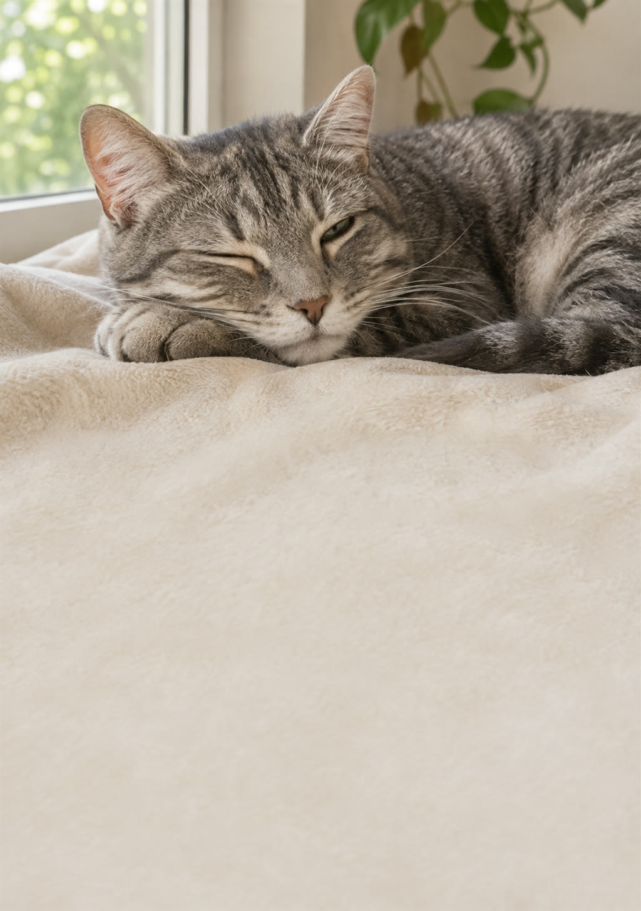

Em 30 dias, você aprende a língua dele e ajusta a casa e a rotina pra acabar com a mordida do nada, o xixi fora da caixa, o sofá arranhado e o miado de madrugada.
Quero meu gato mais calmo →
Caixa de areia, água, comida, esconderijos e lugares altos no lugar certo.
A brincadeira que gasta a energia, o ciclo caçar-comer-dormir e o arranhador que funciona.
Piscada lenta, o mapa do carinho e os sinais de chega.
Caixa de transporte, visitas, noites tranquilas e mudanças sem estresse.
O gato é caçador e também é presa. Quando ele não consegue caçar ou não se sente seguro, a energia e o medo viram arranhão, mordida, xixi fora do lugar e miado. Atenda as duas, e o gato muda.
Rabo, orelhas, olhos, sons e os 5 recursos que todo gato precisa.
Dia a dia: caixa de areia, água, esconderijos, brincadeira, arranhador, carinho e calma.
Xixi fora da caixa, mordidas, arranhões, miado, medo, bancada e plantas tóxicas.
E o que fazer no lugar de cada uma.
Logo depois do pagamento aprovado, o acesso ao PDF chega no seu e-mail. Dá pra ler no celular, no computador ou imprimir.
Sim. Serve pra filhote, adulto e idoso, e pra casas com mais de um gato.
De 5 a 15 minutos, principalmente na brincadeira. O resto é ajuste da casa, feito uma vez.
Sim, tem um capítulo só disso. Mas, antes, leve ao veterinário: problema urinário é muito comum e pode ser grave.
Não. É um guia educativo. Mudança repentina de comportamento pode ser dor ou doença.
Você tem 7 dias de garantia. Pede o reembolso e recebe 100% do valor de volta.